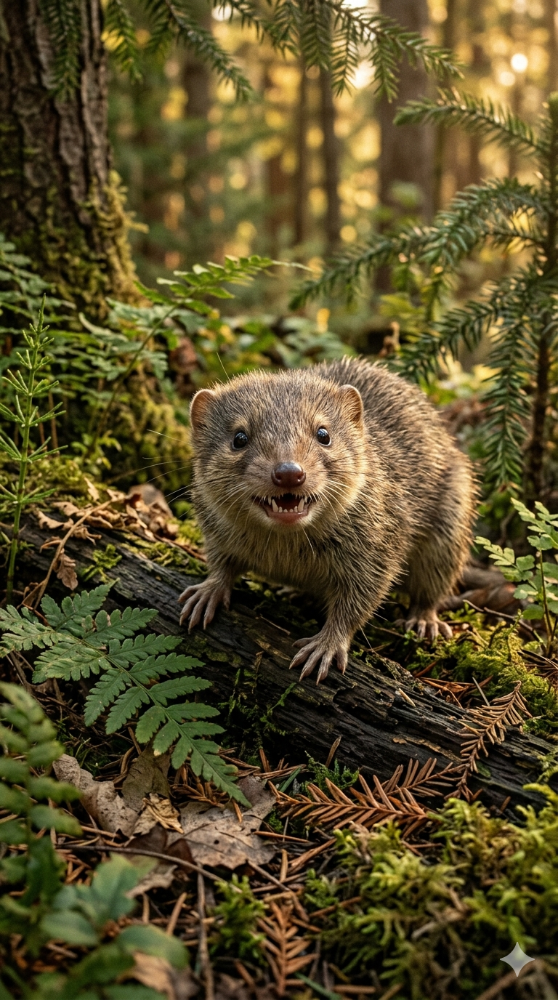
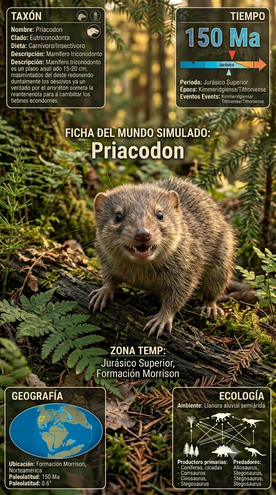
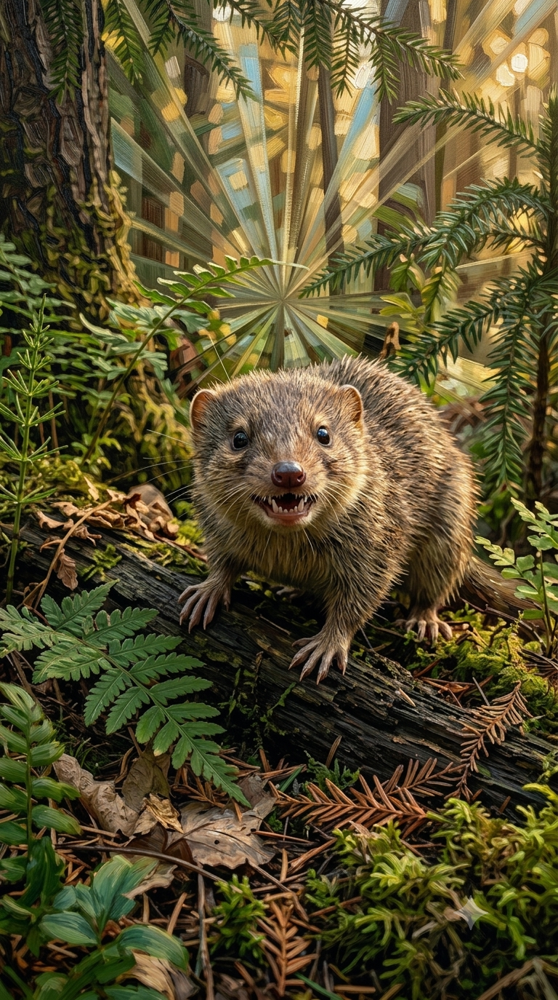
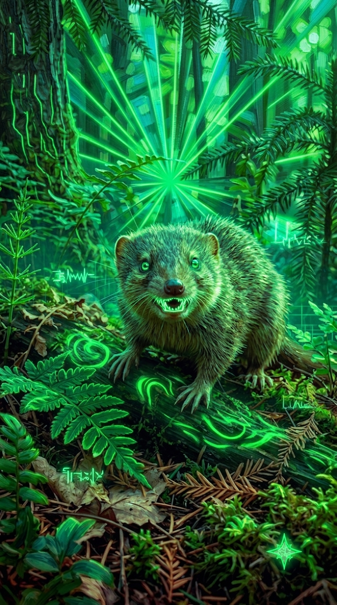

Paleoficha de Priacodon




Periodo: Jurásico Superior
Edad: Hace aproximadamente 150 millones de años.
Dieta: Carnívoro especializado en pequeños invertebrados y vertebrados.
Distribución: Formación Morrison, Wyoming (Norteamérica).
TAXÓN:
Priacodon
CLADO: Orden Eutriconodonta
DIETA: Carnívoro especializado en pequeños invertebrados y vertebrados
TAMAÑO: Pequeño, similar a un roedor actual
LOCOMOCIÓN: Terrestre ágil, con probables habilidades para trepar.
TIEMPO:
Jurásico Superior (Kimmeridgiense/Titoniense), aproximadamente 150 millones de años.
GEOGRAFÍA:
Formación Morrison, Wyoming (Norteamérica). Llanuras aluviales de la gran cuenca sedimentaria del oeste americano, con paisajes estacionales dominados por bosques y praderas de cícadas.
ECOLOGÍA:
Bosques de coníferas, ginkgos y helechos. Compartía su ecosistema con grandes dinosaurios como Allosaurus y Diplodocus, además de otros pequeños mamíferos como Dryolestes. Ocupaba un nicho de depredador nocturno o crepuscular, especializado en insectos y pequeños vertebrados, siendo a su vez presa de pequeños terópodos.
CLIMA:
Wm6 (Estacional templado). Clima cálido con una estación seca prolongada.
ESTADO ECOLÓGICO:
Estable. Constituye un ejemplo representativo de la diversidad de los primeros mamíferos durante el dominio de los dinosaurios.
Vídeo PalEntropía:
▶ Ver Short en YouTube